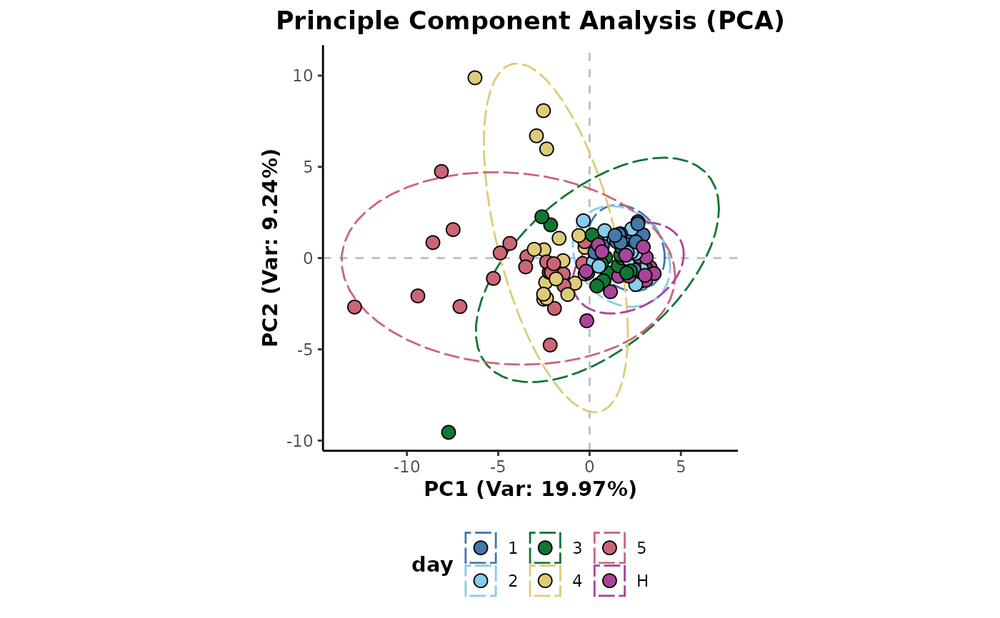
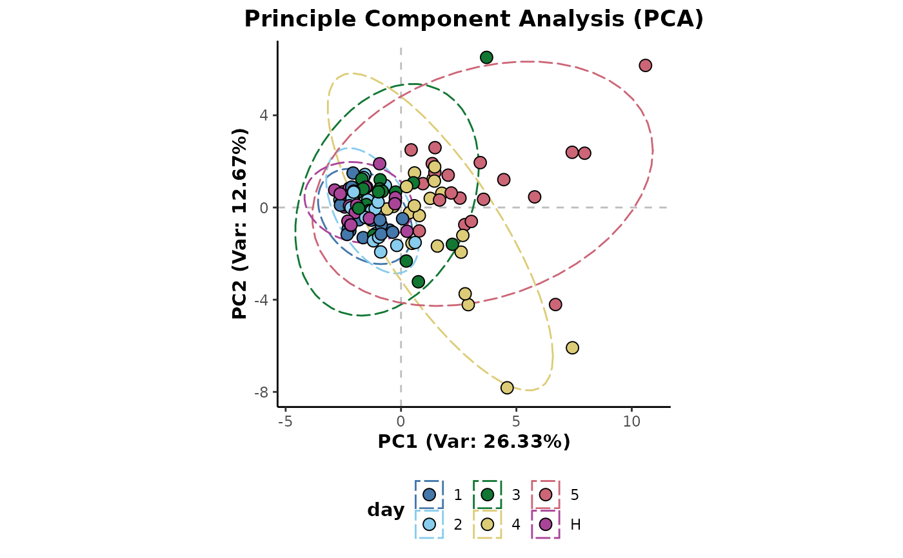

Feature filtering based on class occupancy.
occupancyMaximum(d, cls = "class", occupancy = 2/3) # S4 method for AnalysisData occupancyMaximum(d, cls = "class", occupancy = 2/3) occupancyMinimum(d, cls = "class", occupancy = 2/3) # S4 method for AnalysisData occupancyMinimum(d, cls = "class", occupancy = 2/3)
| d | S4 object of class |
|---|---|
| cls | sample information column name to use for class data |
| occupancy | feature occupancy filtering threshold, below which features will be removed |
An S4 object of class AnalysisData containing the class occupancy filtered data.
Occupancy provides a useful metric by which to filter poorly represented features (features containing a majority zero or missing values). An occupancy threshold provides a means of specifying this majority with variables below the threshold excluded from further analyses. However, this can be complicated by an underlying class structure present within the data where a variable may be well represented within one class but not in another.
occupancyMaximium: Maximum occupancy threshold feature filtering. Where the maximum occupancy across all classes is above the threshold. Therefore, for a feature to be retained, only a single class needs to have an occupancy above the threshold.
occupancyMinimum: Minimum occupancy threshold feature filtering. Where the minimum occupancy across all classes is required to be above the threshold. Therefore, for a feature to be retained, all classes would need to have an occupancy above the threshold.
## Each of the following examples shows the application ## of the feature occupancy filtering method method and ## then a Principle Component Analysis is plotted to show ## its effect on the data structure. ## Initial example data preparation library(metaboData) d <- analysisData(abr1$neg[,200:300],abr1$fact) ## Maximum occupancy threshold feature filtering d %>% occupancyMaximum(cls = 'day') %>% plotPCA(cls = 'day')## Minimum occupancy threshold feature filtering d %>% occupancyMinimum(cls = 'day') %>% plotPCA(cls = 'day')